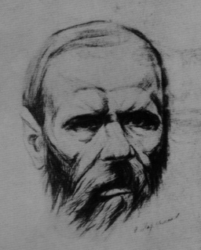

litcrit.htm
Literary Criticism

Literary criticism of a novel is by no means definitive nor is it authoritative. Nevertheless, it is instructive to address literary criticism of The Adolescent for two reasons: it illuminates scholarly interpretations of the novel and it compels the reader to reflect upon his or her own interpretation of the novel. In short, literary criticism acts as a springboard for the reader’s own ideas. What follows is a brief overview of what scholars say about the novel. The views are organized by general headings and the quotes are presented. While reading this section, it is necessary to keep in mind that there is a scarcity of commentary on the novel, and that the viewpoints are drawn from three main sources (see end of section for list of sources). Richard Pevear writes in the introduction to his translation: The Adolescent is “… the least known of Dostoevsky’s five novels, the least discussed in the vast critical literature on Dostoevsky…” While the scarcity of literary criticism and the apparent lack of scholarly interest in the novel present us with a somewhat limited portrait of literary criticism of the work, we can nonetheless take this opportunity to construct our own evaluation of the novel.
- General Assessment of the novel: literary success or failure?
There is much controversy about whether The Adolescent is a “literary success” or a “literary failure” – in terms of the work’s artistic worth, some critics consider the work genius, while others consider it sloppy. Here are some views:
“Dostoevsky is not afraid sometimes to sacrifice artistry for the sake of sustaining “interest” and he attains his end. In the variety of its happenings, medley of characters, strained passions, and the effect of its conflict, A Raw Youth is the most captivating of all Dostoevsky’s novels.” (Mochulsky 509)
“A Raw Youth is a curious hybrid of a novel and represents something of an anomaly among the great creations of Dostoevksy’s last period. Written between The Devils and The Brothers Karamazov, it is far from attaining the artistic stature of these two works, although its severest critics may have considerable exaggerated its defects. A Raw Youth unquestionably contains some extremely effective and moving scenes of childhood in Dostoevsky’s best “philanthropic” manner and his inner portrait of a rebellious adolescent is often quite touching and persuasive.” (Frank, 171).
“Why should A Raw Youth slump so markedly when compared with Dostoevsky’s other major novels? Writers, even great ones, do not necessarily produce masterpieces each time they put pen to paper; but some answer may perhaps be located in the implicit self-censorship that he here exercised on his creative faculties. He was not working freely, as he had always done in the past, and following his inspiration wherever it might lead. Rather, he was writing under the pressure of his commitment to Notes of the Fatherland, the leading Populist organ that was carrying on the social-cultural tradition against which he had fought all through the 1860’s.” (Frank 171).
“Dostoevsky, alas, takes the easy way out in A Raw Youth and stuffs it with all sorts of hackneyed plot ingredients (concealed letters, lawsuits over disputed inheritances, attempts at blackmail, and so on), which allow him to ship up excitement by means that are purely superficial and external. Moreover, he never succeeded in integrating his main thematic concerns with such shopworn devices. Instead of deeper motifs emerging naturally from the plot action, as they do elsewhere, they appear as extraneous intrusions in the form of static monologues and inset stories.” (Frank 172).
Criticism of the work can largely be explained in terms of what the critic expects from the novel. Scholars of Dostoevky’s works may have a different interpretation of The Adolescent than a reader who is simply reading the novel for pleasure.
- Theme: The family and the fate of Russia
Critics claim that the main significance of The Adolescent is drawn from its political message that the “the fate of the family was a key to Russia’s destiny” (Pevear xi). The Adolescent centers around Arkady’s searach for self-identity as an illegitimate child, and for self-independence as an adolescent, or raw youth coming into being. Arkady is surrounded by his fragmented family –André Petróvich Versílov, his natural father, Sofya Andréevnaas, his birth mother, Makár Ivánovich, his legal father, Lizaveta Makaronvna, his equally illegitimate sister, and various other half-related siblings. The Adolescent is, at its core, an exploration of Dostoevsky’s conception of the “accidental family” and the human relationships which relate a web of people. Konstantin Mochulsky clarifies the duality of individual freedom and human relationships:
“Thus the main theme of the novel is posed - the problem of communality; man is determined by his character, but his fate is defined in freedom, in spite of his character; the influence of one personality on another is limitless; the roots of human interrelationship extend into metaphysical depths; the violation of this organic collectivity of souls is reflected in social upheavals and political catastrophes.” (Mochulsky 511)
In effect, the portrait of the family in The Adolescent represents Russia and Russians who, while diverse, are closely linked in a web of relationships. This relates to one of Dostoevsky’s classic themes that he explores throughout his various works, the question of: Am I my brother’s keeper? Dostoekvsky would argue that yes, just as in The Adolescent, individuals have profound influence on each other, Russia’s fate depends on the unity of its people, its family.
- Literary Technique: First-person Historical Narration
The novel is written in the first person historical narrative of 19 year-old Arkady Dolgoruky, in the spirit of an autobiography or a personal diary. The novel begins with Arkady writing and in effect “speaking” directly to the reader:
“Unable to restrain myself, I have sat down to record this history of my first steps on life’s career, though I could have done as well without it. One thing I know for certain: never again will I sit down to write my autobiography, even id I live to be a hundred. You have to be all too basely in love with yourself to write about yourself without shame. My only excuse is that I’m not writing for the same reason everyone else writes, that is, for the sake of the reader’s praises. If I have suddenly decided to record word for word all that has happened to me since last year, then I have decided it as the result of an inner need: so struck I am by everything that has happened.” (Dostoevksy 5)
Dosotevksy’s choice of literary technique, which is essentially carefully arranged “disorder” in narration, presents both advantages and limitations. The advantage is that Arkady’s self-confessed lack of literary skill gives Dostoevsky more freedom in his writing: there are lower literary “standards.” Dostoevsky takes advantage of this artistic freedom; the novel is jumbled in time, and the order of Arkady’s thoughts often seem thoughtless and careless. The narration from the point of view of an adolescent also allows Dostoevsky to create heightened drama and emotional tension. Joseph Frank claims this gives the book a contrived, melodramatic feel:
“…Dostoevsky treats his subject with his usual roman-feuilleton technique. He compresses events into a brief span of time, strives for tightly plotted effects of mystery and surprise, and creates a world in which characters exists in a constant state of heightened emotional tension. This supercharged atmosphere is quite appropriate for Dostoevsky’s other major novels, in which is eschatological vision of human life blends with his crime-thriller plotting to create a unity of dramatic suspense, psychological verisimilitude, and moral-philosophical profundity. But when the same treatment is accorded a subject of lesser scope, where the conflicts are hardly of the same magnitude, the tragedy becomes melodrama and the sustained heightening of tone is apt to seem exaggeratedly inflated.” (Frank 172).
The limitation of the first person narration is that the reader learns the events of the story through the eyes and mind of one single character and the danger is that the plot is dull and one-sided. Dostoevsky circumvents this drawback by supplementing Arkady’s narration with letters from other characters. These letters, while highly contrived, serve to provide the reader insight into the other characters with whom Arkady is interacting.
- Compare and Contrast: The Adolescent and Dostoevsky’s other works
Literary criticism of The Adolescent largely places the novel within the context of Dostoevsky’s other novels. As such, The Adolescent is often viewed as part of a sequence of novels. Richard Pevear writes: “The Adolescent is the fourth of the five major novels that Dostoevsky wrote after the turning point of Notes from Underground (1864). These novels in their sequence represent an ascending movement from “underground” towards the cold, clear light at the end of The Brothers Karamazov. The Adolescent is the next-to-last step in this ascent.”
Throughout all of his works, Dostoevsky seeks to portray the embodiment of the beautiful person:
“Dostoevsky’s attempt to portray “the positively beautiful individual” Prince Myshkin in The Idiot, Makar Dolguruky in A Raw Yough, Bishop Tikhon in The Devils, the Elder Zosima and Alyosha in Brothers Karamazov” (Mochulsky 381)
The Adolescent and Notes from Underground:
“In Notes from Underground Dostoevsky brilliantly analyzed the disease of consciousness and discovered the world of underground psychology, till then unknown. The “dreamer’s” unappeased and wronged thirst of beauty is turned into the underground man’s ineffectual malice and cynicism. The idea of Rothschild is the raw youths’ underground; the image of beauty flashed before him for an instant in his father’s face and after this shining vision the darkness of reality became even more obscure.” (Mochulsky 513)
Arkady may be compared to the underground man: “With his mixture of justified exasperation and scarcely suppressed rage, his quasi-comical and self-glorifying aspiration toward dominance and power, Arkady is an adolescent (and much less articulate) variation of the underground man… Dostoevsky thus grounds Arkady’s “underground” impulses and behavior in a “philanthropic” social-psychological context that makes them understandable and forgivable.” (France 175).
The Adolescent and The Idiot
“The structure of A Raw Youth is analogous to the structure of The Idiot. Both here and there a just man is set in opposition to all the sinful world. But Prince Myshkin is a Russian nobleman with a dreamlike “religion of the heart,” Makar Dolgoruky is a heroic Russian type, faithful to the people’s holy-of-holies. In the first novel is a blind night, in the second - a dawn. New hopes had been born in the writer’s soul.” (Mochulsky 534).
The Adolescent and The Devils
“So the idea of A Raw Youth is naturally connected with the idea of The Devils. The contemporary crisis is a crisis of aesthetic consciousness. The ideal of beauty has been muddled, but mankind cannot live without beauty. Dostoevsky resolutely affirmed that ‘it is possible to live without bread, but without beauty it is altogether impossible.’ The young generation is offended by the “unsightliness of their fathers. At the core of social disturbance is the disintegration of the family. In its infirmity is reflected the world crisis, which mankind is experiencing.” (Mochulsky 517)
“The Devils ends with universal destruction; Russia presented itself to the write as sick, possessed by devils; the number night was illuminated by a fire of sedition. A Raw Youth concludes with faith in a new life, in a new ideal of beauty. Dostoevsky dreamt of finding “beautiful forms” and creating an art with which to depict contemporary chaos. “Disorder” is only a stage in development; Arkady did not perish in chaos; the experience re-educated him and tempered him for a new life. After hell (The Devils) and purgatory (A Raw Youth) the writer intended a poem about paradies (Brothers Karamazov). Death cut short his ascent at the very beginning.” (Mochulsky 518).
The Adolescent and The Brothers Karamazov
“The idea of the “family tragedy” of The Brothers Karamazov evolves out of the family chronicle, A Raw Youth. Versilov’s “haphazard household” in the process of its decomposition must generate the household of the Karamazovs. (Mochulsky 517).
Sources:
Dostoevsky, Fyodor, The Adolescent, translated by Richard Pevear and Larissa Volokhonsky (Introduction by Richard Pevear). New York: Alfred A. Knopf, 2003.
Frank, Joseph. The Mantle of the Profit. Princeton and Oxford: Princeton University Press, 2002.
Mochlusky, Konstantin. Dostoevsky His Life and Work. Princeton: Princeton University Press, 1967.